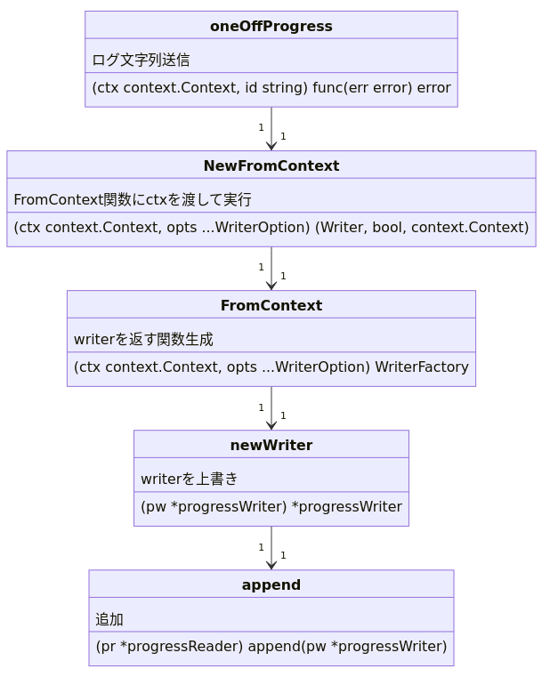

KDOC 20: docker build のログ出力を読む
[python 2/4]RUN pip3 install [build 2/13] COPY . .
みたいな表示はどうやっているのかを調べる。
ミニマムに実装しようとしたが、あまりよくわからなかった…。contextの知識が足りなそう。
memo
図
classDiagram
class oneOffProgress {
(ctx context.Context, id string) func(err error) error
ログ文字列送信
}
class NewFromContext {
(ctx context.Context, opts ...WriterOption) (Writer, bool, context.Context)
FromContext関数にctxを渡して実行
}
class FromContext {
(ctx context.Context, opts ...WriterOption) WriterFactory
writerを返す関数生成
}
class newWriter {
(pw *progressWriter) *progressWriter
writerを上書き
}
class append {
(pr *progressReader) append(pw *progressWriter)
追加
}
oneOffProgress "1" --> "1" NewFromContext
NewFromContext "1" --> "1" FromContext
FromContext "1" --> "1" newWriter
newWriter "1" --> "1" append

ログ送信
よく見るログ文から、どこで実行してるかを調べる。
https://github.com/kd-collective/moby/blob/c030f7f40d62ecabfedd1cf96fbb734ce051ce73/builder/builder-next/exporter/export.go#L152
layersDone := oneOffProgress(ctx, “exporting layers”)
vendorにもある。
https://github.com/kd-collective/moby/blob/c030f7f40d62ecabfedd1cf96fbb734ce051ce73/vendor/github.com/moby/buildkit/exporter/containerimage/writer.go#L327
layersDone := progress.OneOff(ctx, “exporting layers”)
どっちも変更して、docker本体をビルドして動かしてみたが、反映されない。読んで調べる。
https://github.com/kd-collective/moby/blob/c030f7f40d62ecabfedd1cf96fbb734ce051ce73/builder/builder-next/exporter/writer.go#L219-L234
oneOffProgressを調べる。
func oneOffProgress(ctx context.Context, id string) func(err error) error { pw, _, _ := progress.NewFromContext(ctx) now := time.Now() st := progress.Status{ Started: &now, } _ = pw.Write(id, st) return func(err error) error { // TODO: set error on status now := time.Now() st.Completed = &now _ = pw.Write(id, st) _ = pw.Close() return err } }
progress.NewFromContext(ctx)を調べる。
https://github.com/kd-collective/moby/blob/c030f7f40d62ecabfedd1cf96fbb734ce051ce73/vendor/github.com/moby/buildkit/util/progress/progress.go#L47-L52
/ NewFromContext creates a new Writer based on a Writer previously stored / in the Context and returns a new Context with the new Writer stored. It is // the callers responsibility to Close the returned Writer to avoid resource leaks. func NewFromContext(ctx context.Context, opts …WriterOption) (Writer, bool, context.Context) { return FromContext(ctx, opts…)(ctx) }
https://github.com/kd-collective/moby/blob/c030f7f40d62ecabfedd1cf96fbb734ce051ce73/vendor/github.com/moby/buildkit/util/progress/progress.go#L13-L15
https://github.com/kd-collective/moby/blob/c030f7f40d62ecabfedd1cf96fbb734ce051ce73/vendor/github.com/moby/buildkit/util/progress/progress.go#L26-L45
/ FromContext returns a WriterFactory to generate new progress writers based / on a Writer previously stored in the Context. func FromContext(ctx context.Context, opts …WriterOption) WriterFactory { v := ctx.Value(contextKey) return func(ctx context.Context) (Writer, bool, context.Context) { pw, ok := v.(*progressWriter) if !ok { if pw, ok := v.(*MultiWriter); ok { return pw, true, ctx } return &noOpWriter{}, false, ctx } pw = newWriter(pw) for _, o := range opts { o(pw) } ctx = context.WithValue(ctx, contextKey, pw) return pw, true, ctx } }
- contextを使っていそう
- FromContext
- 古いcontextに、新しいcontextを書き込んで返す
- contextから、key “buildkit/util/progress” を読み出す
- progressWriterであることを型チェック
- newWriterを実行
- 生成したwriterを返す関数を返す
- ↑をctxを渡して評価することで、writerが取り出せる
- 取り出したwriterに、id, statusを書き込む
- FromContext
https://github.com/kd-collective/moby/blob/c030f7f40d62ecabfedd1cf96fbb734ce051ce73/vendor/github.com/moby/buildkit/util/progress/progress.go#L221-L225
type progressWriter struct { done bool reader *progressReader meta map[string]interface{} }
- 実行結果を表示させているのをprogressという。まあわかる
https://github.com/kd-collective/moby/blob/c030f7f40d62ecabfedd1cf96fbb734ce051ce73/vendor/github.com/moby/buildkit/util/progress/progress.go#L208-L219
func newWriter(pw *progressWriter) *progressWriter { meta := make(map[string]interface{}) for k, v := range pw.meta { meta[k] = v } pw = &progressWriter{ reader: pw.reader, meta: meta, } pw.reader.append(pw) return pw }
- progressWriterを取ってprogressWriterを返す
- ログの情報を付け加えてるのだろう
- metaはstring keyのmap。引数のprogressWriterから値をセットして、metaを複製
- 前のmetaの値を引き継いだ構造体progressWriterを作成
- pw.readerに作ったwriterをappend
- appendはmutex lockがされていて、同時編集されないようになっている
- どうしてreaderにappendするのか
- このappendは、追加された関数
- readerの中に、writersがあって、そこに追加する
https://github.com/kd-collective/moby/blob/c030f7f40d62ecabfedd1cf96fbb734ce051ce73/vendor/github.com/moby/buildkit/util/progress/progress.go#L109-L115
type progressReader struct { ctx context.Context cond *sync.Cond mu sync.Mutex writers map[*progressWriter]struct{} dirty map[string]*Progress }
https://github.com/kd-collective/moby/blob/c030f7f40d62ecabfedd1cf96fbb734ce051ce73/vendor/github.com/moby/buildkit/util/progress/progress.go#L176-L186
func (pr *progressReader) append(pw *progressWriter) { pr.mu.Lock() defer pr.mu.Unlock()
select { case <-pr.ctx.Done(): return default: pr.writers[pw] = struct{}{} } }
- appendは、progressReaderの中のwritersに追加するという関数
- 試してみたが、いまいち使い方がわからない
- 単独実行で試せない
- 初期化はどうするんだ
- reader
- writers
- writer
- reader
- writer
- reader
- そもそもcontextは、goルーチンに渡すことで、異なるgoルーチンと値をシェアできるようになる、というもの
送信したログをどこで表示してるか
ログの送信とprintは分離されている。どこでprintしているのだろうか。
contextの使い方
WithValue(parent Context, key, val interface{}) Context
Value(key interface{}) interface{}
- WithValueで値をセットし、Valueで値を取り出す
progressWriter
- ProgressWriterというのがあるな。関係ありそう
https://github.com/kd-collective/moby/blob/924edb948c2731df3b77697a8fcc85da3f6eef57/api/types/backend/build.go#L25-L31
type ProgressWriter struct { Output io.Writer StdoutFormatter io.Writer StderrFormatter io.Writer AuxFormatter *streamformatter.AuxFormatter ProgressReaderFunc func(io.ReadCloser) io.ReadCloser }
builder
- 気づいた
- stdoutとoutputが別になってる
- これは、コードを書いてる途中で直面したことだ。stdoutだと一時的にためておいてあとで整形して出す、ということができないために、一時的な保存として別のbufferを使った。このコードでもそうなのかは知らない
https://github.com/kd-collective/moby/blob/924edb948c2731df3b77697a8fcc85da3f6eef57/builder/dockerfile/builder.go#L112-L130
type Builder struct { options *types.ImageBuildOptions
Stdout io.Writer Stderr io.Writer Aux *streamformatter.AuxFormatter Output io.Writer
docker builder.Backend clientCtx context.Context
idMapping idtools.IdentityMapping disableCommit bool imageSources *imageSources pathCache pathCache containerManager *containerManager imageProber ImageProber platform *specs.Platform }
openAPI定義
docker engineのAPI定義を発見した。
https://github.com/kd-collective/moby/blob/924edb948c2731df3b77697a8fcc85da3f6eef57/api/swagger.yaml#L1